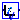

Component models for wind machine representation
Extends from Modelica.Icons.Package (Icon for standard packages).
| Name | Description |
|---|---|
|  LVACL | Model for the Low Voltage Active Current Limiter |
| HVRCL | Model for the High Voltage Ractive Current Limiter |
| LVPL | Low voltage power logic |
| CCL | Model for calculation of converter current limits |
Model for the Low Voltage Active Current Limiter
| Name | Description |
|---|---|
| Ip_LVACL | |
| Vt | |
| Ip_LVPL |
Model for the High Voltage Ractive Current Limiter
| Name | Description |
|---|---|
| VHVRCR | Threshold voltage for HVRCL [1] |
| CurHVRCR | Max. reactive current at VHVRCR [1] |
| Name | Description |
|---|---|
| Vt | |
| Iq_HVRCL | |
| Iq |
Low voltage power logic
| Name | Description |
|---|---|
| VLVPL1 | LVPL voltage 1 (Low voltage power logic) [1] |
| VLVPL2 | LVPL voltage 2 [1] |
| GLVPL | LVPL gain |
| K |
| Name | Description |
|---|---|
| Vt | |
| LVPL |
Model for calculation of converter current limits
| Name | Description |
|---|---|
| Qmax | [1] |
| pqflag | |
| ImaxTD | Converter current limit [1] |
| Iphl | Hard active current limit [1] |
| Iqhl | Hard reactive current limit [1] |
| Name | Description |
|---|---|
| IQmin | |
| IpCMD | |
| IqCMD | |
| IQmax | |
| IPmax | |
| Vt |